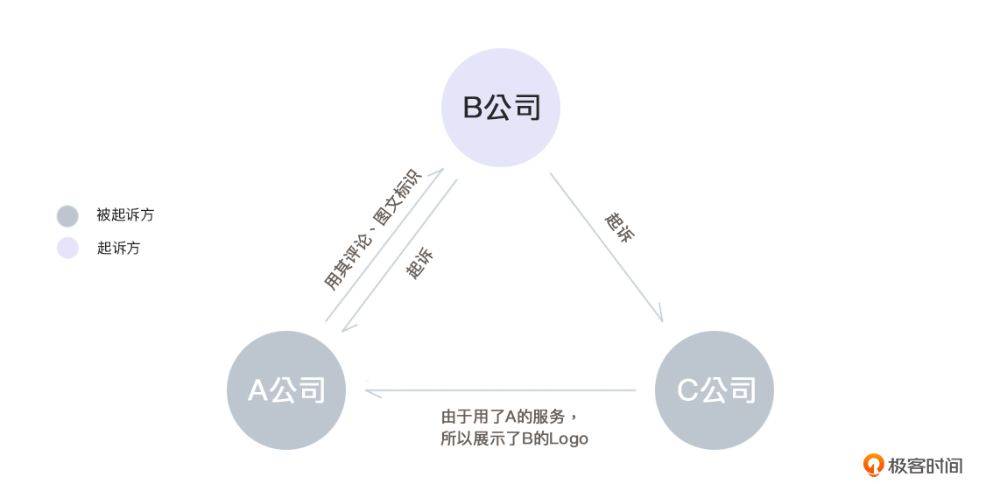

- 00 开篇词 如何突破“爬虫反爬虫”内卷之怪现状？.md.html
- 01 爬虫需求的诞生：我们是正经的软件工程师.md.html
- 02 爬虫的内卷和黑化：我们变得不正经啦.md.html
- 03 反爬虫的发展以及展望：我们也不是什么正经工程师.md.html
- 04 爬虫的首轮攻势：如何低调地拿到自己想要的数据？.md.html
- 05 反爬虫的应对之策：通用且基本的检测规则是什么？.md.html
- 06 爬虫攻势升级：分布式的意义在哪里？.md.html
- 07 反爬虫升级：如何判定你是个真人？.md.html
- 08 博弈的均衡：如何对抗道德的沦丧和人性的扭曲？.md.html
- 09 反爬虫概述（一）：高收益的后端能做哪些基本的事情？.md.html
- 10 反爬虫概述（二）：无收益的前端是怎么进行key处理的呢？.md.html
- 11 反爬虫概述（三）：前端反爬虫是怎么做信息收集的？.md.html
- 12 反爬虫概述（四）：前后端都不合适的时候如何进行处理？.md.html
- 13 反爬虫基础理论：这是唯一一节严肃的纯理论课.md.html
- 14 低耦合：如何快速下线反爬虫系统？.md.html
- 15 规则引擎：如何快速响应突发的爬虫需求？.md.html
- 16 验证爬虫：我到底要不要百分百投入？.md.html
- 17 招聘篇：如何写一个合适的JD？.md.html
- 18 如何搞定老板（上）：如何编造虚无缥缈的OKR？.md.html
- 19 如何搞定老板（中）：如何组建团队.md.html
- 20 如何搞定老板（下）：团队考核怎么做？.md.html
- 加餐 反爬虫的专家级鉴别力：用户习惯检测.md.html
- 春节加餐01 破解还是不破解，这是一个问题.md.html
- 春节加餐02 真实世界里，小心屠龙勇士变恶龙.md.html
- 春节加餐03 低调驶得万年船.md.html
- 答疑课堂 爬虫反爬虫调试对抗技巧以及虚拟机详解.md.html
- 结束语 达到理想不太易.md.html
- 捐赠
春节加餐03 低调驶得万年船
你好，我是DS Hunter。又见面了。
新年也快结束了，我们终于可以谈一点略沉重一些的故事了。
前天我也和你预告过了，我们要谈的是爬虫引上的官司。这里我选择了两个故事，第一个是大规模爬虫惹上官司， 第二个是小规模爬虫惹上官司。两者对应的法律条款也各不相同。
实际上，爬虫虽然是个历史悠久的技术，但是从法律上来说，这还是一个新生事物，因此也会引发很多的争议。无论你是大公司，正规地使用爬虫对抗竞对，还是个人研发者，自己靠兴趣写着玩，都能有一定的借鉴意义。
而反爬虫惹上官司的故事，暂时还没有先例，不过这并不代表反爬虫不会惹上官司，只能说难度大了很多。总的来说，我们还是尽量保持善意吧。我们常说，法律是道德的最低底线，那么不降低自己的道德底线，一般来说就能安全很多。
此外，这里先给你提两个醒吧。
第一，还是强调一下，文章的内容呢，都是我个人的一些见解。像开篇词里说的，我是一个纯纯的技术人员，不是专业法务，所以一切还是以公司法务的说法为准。咱们今天就当聊聊天，交流交流。
第二点，由于直接评论现实发生的事情，很容易引发名誉权问题。所以，老规矩，我还是会用A公司、B公司之类的称呼来描述。相信你们也猜得出是什么公司。不过，我可没有黑任何公司啊。
好了，那咱们就从大规模爬虫惹上的官司开始说起吧。
爬虫和不正当竞争？
首先是A公司侵犯B公司版权的爬虫案子。
某一年，A公司抓取B公司的用户评论信息，被B公司起诉了。
理由是，A公司大量复制B公司的评论，并且放在了自己的网站上。B公司认为，这样违背了商业道德与诚信原则，构成了不正当竞争。此外，A公司还使用了自己的图文标识，让公众以为双方是合作关系，属于擅自使用知名服务特有名称的不正当竞争行为。
同时被卷入的还有C公司，C公司使用了A公司的服务，因此网站上也有B公司的Logo。
也就是这样，B同时起诉了A和C两家公司。

对此，A公司和C公司都有自己的说法：
- A公司辩称，自己的抓取符合robots.txt协议，因此是合法抓取。
- C公司辩称，自己使用的是A的服务，因此不构成共同故意或过失。
最终法院定的结论是：
A和B服务模式几乎一致，构成直接竞争关系。A使用B的用户评论，会导致B的流量减少。此外，虽然A的抓取符合robots协议，但是并不意味着可以任意使用抓取到的信息。但是，对A公司的侵权使用Logo行为，法院认为，是为了表明信息来源，并无不当。
至于C公司，它虽然使用了A的服务，但并未扩散数据，而是将数据局限在了A的服务范围内，因此不构成共同故意，也就是不侵权。
这个事情会比较绕，比较烧脑，甚至我写这段话的时候都绕晕了自己好几次。我们纵览一下整个结论，就会发现一个问题：
爬虫呢？为什么法院没怎么管爬虫的事情？爬虫到底有罪还是没罪呢？
我知道大家最关心的就是这个直接结论：爬虫到底有罪吗？
实际上，爬虫是一种行为，而法律不仅会根据行为来定罪，还会根据后果、性质等其他方面进行定罪。例如，故意伤人和正当防卫，都是“把别人打了”这个动作，但是我们不会直接说打人是否犯罪，还会考虑动作的性质。这也就是大家常说的“技术无罪”的来源。
因此，爬虫也一样，我们不能只考虑爬虫是否有罪，还要根据造成的后果、事件的性质等问题综合分析。当然，再强调一次，我并非法律专业人士，这些法律指导思想也仅仅是我个人的想法，实际上法律是一门非常严谨的学科，要让专业人士去讨论。
那么退回到这个问题，从抓取行为来看，法院提到：虽然遵守robots协议，但是不能任意使用抓来的信息。可能这个比较让人不解，那么我换个生活的说法，你就觉得这个判定没有问题了：
“购买菜刀需要实名制， 因此我实名制买的菜刀，是合法的。我要用买到的菜刀随便去砍人”
是不是这个就感觉明显违背生活常识，定罪没跑了？那么我们换回来：
“抓取数据需要符合robots协议。因此我遵守了robots协议抓取了数据，是合法的。我可以随意使用这些数据”。
这句话和上一句是完全一样的。虽然爬虫是个新领域，但是发生的行为实际上还是没有什么新意的。就想我前面提到过的那样，互联网其实没什么创新，就是把线下的事情搬到了线上。
从“买菜刀”的例子你就能明白“抓取数据”这回事了。技术本身，确实是无罪的。不过，也千万不要打着“技术无罪”的幌子任意妄为，使用技术去做有罪的事情，那就不能用“技术无罪”为自己辩解了。
接下来，我们就可以做几个判断题了：
- 爬虫是违法的（错）
- 爬虫是合法的（错）
- 爬虫是否合法，取决于法院的心情（错）
- 爬虫是否合法，取决于使用场景以及性质（对）
三短一长选最长，你都懂的。这里的正确答案明显是第四个。这也就回答了大家一直以来的困惑：爬虫到底违法吗？是破解了才违法？那按键精灵违法不违法？为什么我们感觉正常的判了违法，我们觉得罪大恶极的居然没事？
原因啊，就是吃瓜群众的判断往往是着眼于行为本身的，而不是考虑后果。我们讨论一个行为是否违法的时候，多半是有争议的。通常，讨论行为人的思考方式以及造成的后果，才是法律的思考方式。
爬虫和“破坏计算机信息系统”？
那我们再讨论这样一个案子，可能近期你也看到了：
A同学为了给自己的女朋友抢挂号资格，试了下自己的脚本，意外地发现自己的脚本非常好用。
于是，A同学决定，也帮别人抢。最终，抢号这件事变成了一门生意，A同学开始收费帮别人抢。
最终，A同学的行为被警方发现。以涉嫌破坏计算机信息系统罪，暂时采取刑事强制措施，案件还在进一步审理中。
这里我们就不预测案件审理结果了。因为案件审理与多种因素有关，像是情节判定、认错态度等等各种因素。我们就只单独看一下这个例子里，爬虫是否又涉嫌违法了？
很多事情，我们在网上都会对违法行为有争议。我认为，可能是由于对法律并不了解的人，往往会混淆“违法”和“犯罪”这两个概念。严格来说，开车超速就是违法行为，但是这不一定是犯罪行为。违法行为中，违反刑法的行为才是犯罪。
我们单独看这个问题，爬虫是否涉嫌犯罪？
警察认为“涉嫌破坏计算机信息系统罪”给的理由是，刑法286条（这个编号还真的很有计算机的感觉，早年有个CPU就叫286）：
第二百八十六条- - 违反国家规定，对计算机信息系统功能进行删除、修改、增加、干扰，造成计算机信息系统不能正常运行，后果严重的，处五年以下有期徒刑或者拘役；后果特别严重的，处五年以上有期徒刑。- - 违反国家规定，对计算机信息系统中存储、处理或者传输的数据和应用程序进行删除、修改、增加的操作，后果严重的，依照前款的规定处罚。- - 故意制作、传播计算机病毒等破坏性程序，影响计算机系统正常运行，后果严重的，依照第一款的规定处罚。
那么，我们回到这个例子，回答几个问题。
首先，是条款里的关键词“故意”，他是主观故意的吗？
是的，就是为了赚钱。你总不能说我对钱没有兴趣吧？
其次，还是依据条款的提问。那就是，他是否造成了损失？
有。虽然我们暂时很难确定损失多大。可能有人觉得，只是插队啊，这没啥吧。
那么我们换个例子：假设你在北京，准备摇号获取车牌，忽然前面插队了1000人，你被挤出去了，这时候你是否觉得这1000人侵害了你的合法权益？
大部分情况下，当自己的权益受到侵害的时候，大家就能反应过来了。所以可以把自己代入到受害者角度来看看，问题就很好理解了。这里的争议主要在于损失有多大，毕竟可能会对“后果严重”有影响。
最后，我想问你一个问题：是否有证据？
有，自己发了帖子，全天下都知道是他干的。
这里，我作为一个技术人员，依旧无法给出一个明确的回答，告诉你A同学是否犯罪，爬虫是否违法。不过总体总结下来，你就会发现，要想保护自己，核心还是两个字：低调！
低调驶得万年船，在爬虫界永远不会错的。
好了，今天的案例分析就到这里。最后，我再次和你强调一下，今天的分析只是我个人的一些观点，我是一个纯纯的技术人员，不是专业法务，所以一切还是以法律人士的说法为准。
结束的诗词就给大家一个祝福吧，新的一年里，祝大家：
工作富裕且合法，事业轻松又有钱。
我们年后见。
© 2019 - 2023 Liangliang Lee. Powered by gin and hexo-theme-book.